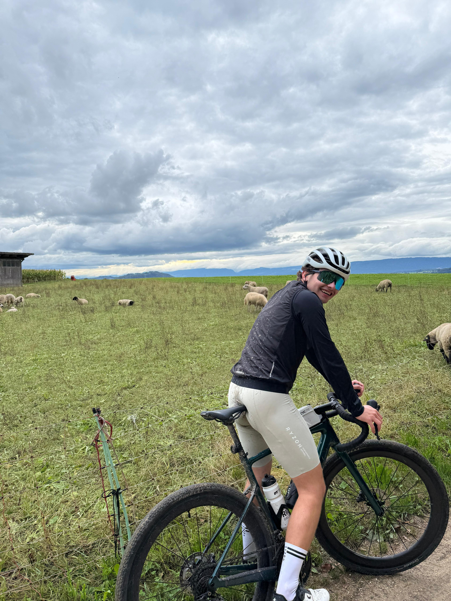

Lars Merino
Student Wirtschaftsinformatik an der BFH | ICT-Projektmitarbeiter bei der Stadt Bern

Platzhalter Text
Ich bin Lars Merino und studiere Wirtschaftsinformatik an der BFH. Neben dem Studium arbeite ich als ICT-Projektmitarbeiter bei der Stadt Bern. In meiner Freizeit bin ich am liebsten aktiv – auf dem Gravelbike, im Gym oder auf dem Padel Court.
Facts:
- Wohnort: Studen BE
-
Hobbys:
- Graveln
- Padel